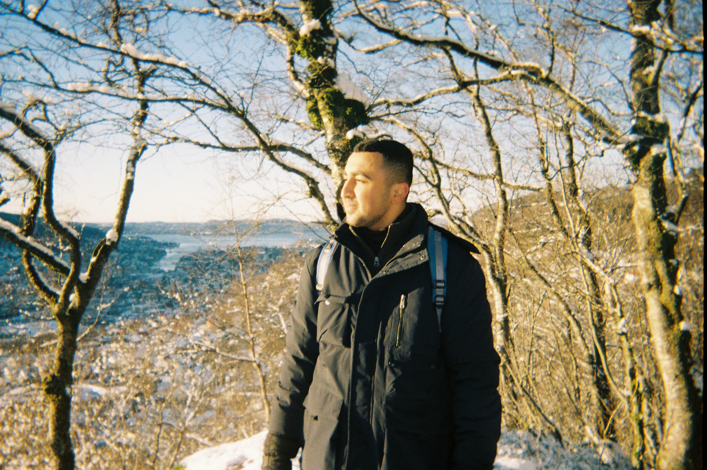

Bergen in November is grey in a way that feels deliberate. Not overcast — grey. The kind of grey that makes you wonder if the sun has simply decided not to show up today, or maybe ever again.
I arrived in Norway for my Erasmus+ semester at the University of Bergen with two overpacked suitcases, a phone full of Google Maps screenshots, and the quiet confidence of someone who had no idea what they were walking into.
What followed was the most formative six months of my life. Not because everything went well. Because most of it didn't — at first.
The first uncomfortable truth
Within two weeks, I had realised something that sounds obvious in retrospect: I didn't know how to be alone. Not lonely — alone. There's a difference. Lonely is missing people. Alone is being in a room with yourself, with no noise to fill the space, and having to decide what to do with that.
In Jordan, I was surrounded. Family dinners, friends dropping by, the constant low hum of people who knew me. In Bergen, the silence was total. I had to build a life from scratch — figure out grocery stores with labels I couldn't read, learn that dinner at 5pm is completely normal, navigate university systems that assumed a level of self-direction I hadn't been asked to have before.
I burned rice three times before I got it right. I got on the wrong bus and ended up somewhere I didn't recognise. I sat through a seminar where I understood maybe 70% of what was said and nodded at the rest.
None of this was catastrophic. But all of it was genuinely, continuously uncomfortable — and that discomfort was the entire point.
What discomfort actually teaches you
There's a version of growth that looks good on paper. You take a course, pass an exam, earn a credential. I've done plenty of that. It's valuable. But it doesn't change how you move through the world.
The Bergen version of growth was different. It changed how I respond to uncertainty. Before Norway, my instinct when I didn't know something was to wait — wait until I understood better, wait until I was more prepared, wait for someone to tell me what to do. That instinct got burned out of me fairly quickly, because waiting in Bergen just meant you stayed confused and hungry.
You learn to act with incomplete information. You learn that being wrong quickly is better than being certain slowly. You learn that most people, in most countries, are willing to help you if you ask with genuine humility instead of performed confidence.
The international classroom
The most valuable thing about studying abroad wasn't the coursework. It was sitting in seminars with students from Germany, Ethiopia, Brazil, South Korea, and Norway — all approaching the same problem from completely different angles.
A German classmate would break a business case into precise logical components. A Brazilian student would immediately ask about the human cost. A Norwegian peer would cut straight to the systemic root. I started seeing my own thinking patterns by watching how different they were from everyone else's.
That's something no textbook gives you. You can read about cultural differences. You cannot read your way into actually thinking differently.
What I came back with
I came back to Jordan with a few practical skills — better cooking, a functional understanding of Norwegian public transit, a tolerance for cold that I didn't have before. But the real things I came back with were harder to put on a CV.
A higher tolerance for uncertainty. The ability to sit with not knowing and keep moving anyway. A genuine curiosity about how other people think, not as a social skill but as an intellectual one. And an understanding that comfort is not the same as safety — sometimes the most dangerous place to stay is where everything feels familiar.
Growth, I now believe, has a specific texture. It feels like being slightly out of your depth, slightly uncomfortable, slightly unsure — and choosing to move forward anyway. Not recklessly. Deliberately.
Bergen taught me that. Six months in the grey, and I came back able to see much further.